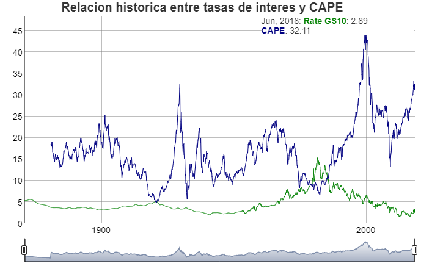

BehavioralEconomicsR es un paquete disenado para trabajar facilmente con data publica de investigaciones de Economia Conductual, de forma gratuita, libre y facil. Este proyecto es creado por Behavioral Economics & Data Science Team (BEST). Aprende a utilizarlo con nuestros ejemplos en https://bestdatascience.github.io/BehavioralEconomicsR/index.html.
Instalacion
Lo primero que debemos hacer es instalar primero R en este enlace y luego RStudio en este enlace. Posteriormente dentro de la consola se debera poner los siguientes scripts
# Los paquetes nuevos son instalados a traves de la funcion install.packages(), siempre entre comillas
install.packages("xts")
install.packages("zoo")
install.packages("dygraphs")
install.packages("devtools")
install.packages("lubridate")
devtools::install_github("BESTDATASCIENCE/BehavioralEconomicsR")A probar el paquete con el trabajo de Shiller!!
El paquete cuenta con data del libro de Shiller Irrational Exuberance y lo puedes usar facilmente utilizando el siguiente script:
data("ie_data")
be=xts::xts(ie_data[,c(8,10)],order.by = ie_data$Date)
be2=xts::xts(ie_data[,c(7,11)],order.by = ie_data$Date)Hora de Graficar
Veamos la relacion entre precio y ganancias:

Veamos la relacion entre CAPE y tasas de interes:
dygraphs::dygraph(be2,
main = "Relacion historica entre tasas de interes y CAPE") %>%
dyRangeSelector()
Codigo de conducta
Por favor considerar que este paquete cuenta con un Codigo de Conducta del Contribuidor. Al participar en este proyecto o utilizarlo, se asume que estas de acuerdo con estos terminos.